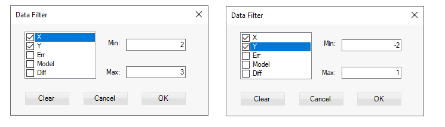
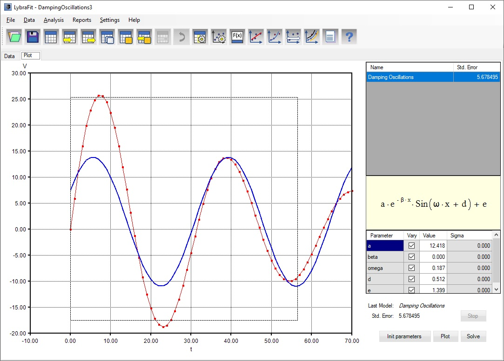
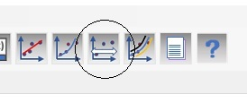

Filter data
You can filter data by setting ranges for one or more columns. Choose Data > Filter from the menu or press Ctrl+W keys. Check columns for which there will be filter and enter the limits
The example below sets limit for data to values for X between 2 and 3 and Y between -2 and 1

Data can be restored to original unfiltered form by opening again the filter dialog and clearing the filter, i.e. unchecking all the columns or clicking the ‘Clear’ button.
Further, if you perform some fit operation with regression model only the filtered data is taken in the regression.
Range of the data can be specified and from the plot view. Position the mouse on top left corner of a rectangle and while keeping the left mouse button down move it until the rectangle covers the desired range. Release the mouse button.

The data on the view will be limited to what the rectangle specified.
Meanwhile the range in the filter dialog will be preset to those limits. Open Filter dialog and confirm the limits.
To remove the filter on the view click on the Zoom Out / Clear Filter button:
